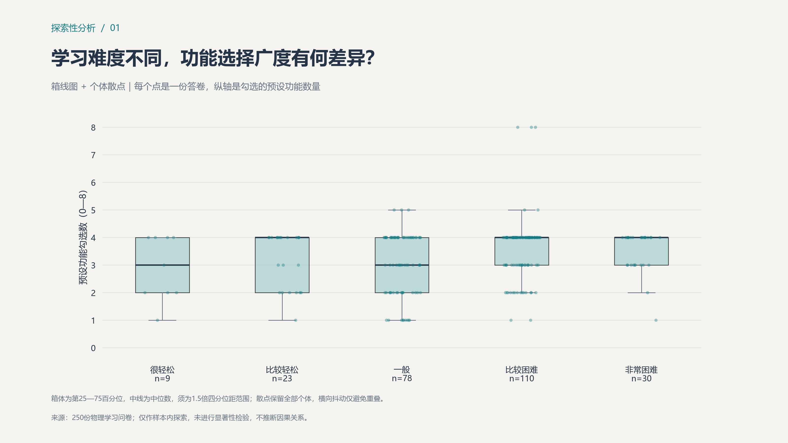
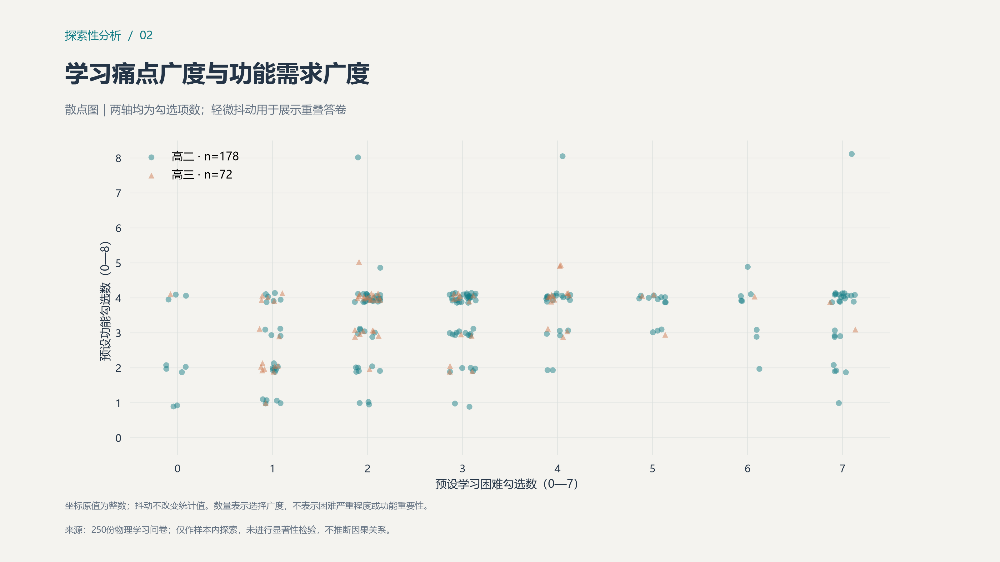
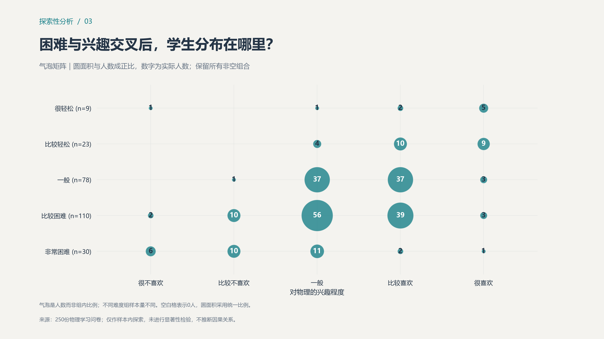
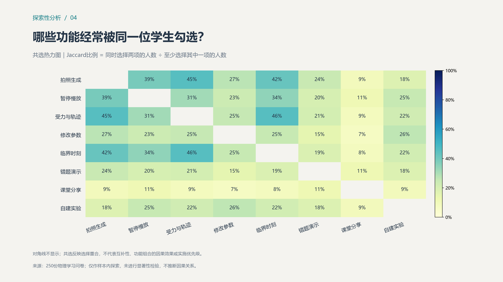
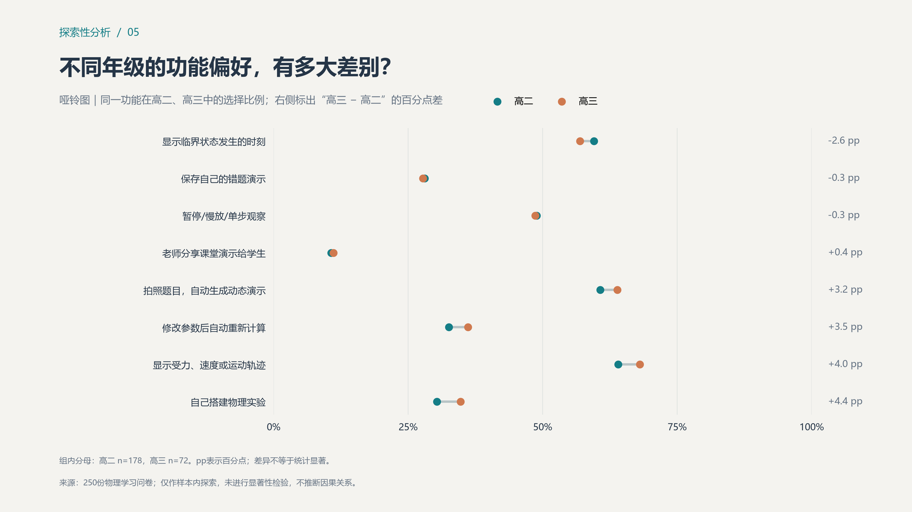
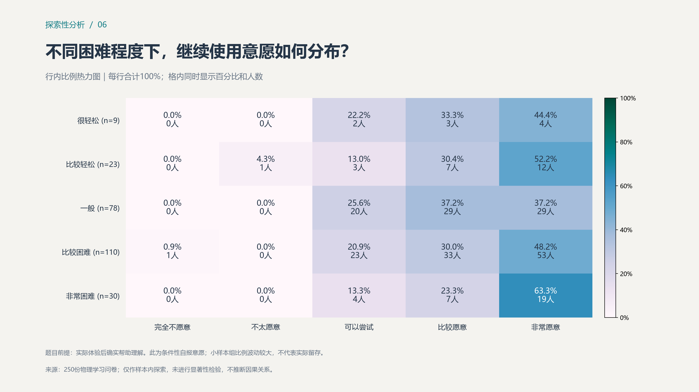

PHYSICS / STUDENT RESEARCH从单题统计，走向交叉关系
250份答卷 · 六张探索图 · 保留所有答卷与原始计数
EXPLORATION 01学习难度不同，功能选择广度有何差异？
不同难度组的功能勾选中位数：很轻松 3项；比较轻松 4项；一般 3项；比较困难 4项；非常困难 4项。

高清 PNG · 矢量 SVG
EXPLORATION 02学习痛点广度与功能需求广度
两类勾选数量的样本 Pearson 相关系数为 0.25。共同的多选作答倾向也可能影响这一关系。

高清 PNG · 矢量 SVG
EXPLORATION 03困难与兴趣交叉后，学生分布在哪里？
觉得物理比较或非常困难的 140 人中，仍有 45 人（32.1%）比较或很喜欢物理。

高清 PNG · 矢量 SVG
EXPLORATION 04哪些功能经常被同一位学生勾选？
共选重合度最高的是“受力与轨迹＋临界时刻”：Jaccard 为 45.5%，同时勾选 97 人。

高清 PNG · 矢量 SVG
EXPLORATION 05不同年级的功能偏好，有多大差别？
年级选择率差异最大的一项是“自己搭建物理实验”：高二 30.3%，高三 34.7%。

高清 PNG · 矢量 SVG
EXPLORATION 06不同困难程度下，继续使用意愿如何分布？
各困难组“比较／非常愿意”的合计比例：很轻松 77.8%；比较轻松 82.6%；一般 74.4%；比较困难 78.2%；非常困难 86.7%。

高清 PNG · 矢量 SVG
可转化为试点问题
把“有兴趣但觉得困难”的学生作为一个待验证的用户群体；探索高共选功能是否适合一起呈现；用真实试用比较学生的理解、独立解题表现与使用体验。上述方向来自描述性观察，需通过后续研究验证。